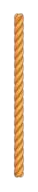

Explorăm știința și frumusețea norilor, de la forme la fenomene atmosferice

Fenomene atmosferice legate de nori
Norii nu doar că ne arată ce vreme urmează, dar fac parte și din fenomene pe care le vedem des,
cum ar fi ploaia sau furtunile, și din altele mai speciale,
cum sunt halourile din jurul soarelui sau curcubeele după ploaie.
Ploaia și ninsoarea
Cele mai comune fenomene!
Atunci când norii acumulează suficientă umezeală,
picăturile de apă devin prea grele și încep să cadă
sub formă de ploaie.
Norii nimbostratus, cu aspect gri și întunecat, sunt responsabili pentru ploi continue și liniștite
Dacă temperatura este scăzută, norii de mare altitudine, precum cirrostratus, generează ninsoare, când vaporii
de apă se transformă direct în cristale de gheață.
Ploaie din nori nimbostratus
Un detaliu interesant este că, înainte de o ploaie, poți observa o schimbare treptată în tipul norilor: de la cirrus
subțiri la nimbostratus groși, care acoperă cerul complet.
Furtuni
Spectacolul norilor cumulonimbus!
Norii cumulonimbus, imenși și cu baze joase, sunt centrul furtunilor.
În interiorul lor, aerul cald se ridică rapid, generând curenți puternici care provoacă:
Fulgere și tunete: Particulele de gheață și apă din nor se ciocnesc, acumulând electricitate statică.
Grindina: Picăturile de apă îngheață în interiorul norului și sunt ridicate de curenții de aer până devin
suficient de grele pentru a cădea.
Furtuna cu nor cumulonimbus
La marginea unui cumulonimbus, poți observa un fenomen numit arcus:
o bandă întunecată care semnalează apropierea furtunii. Dacă vezi unul, e bine să te adăpostești!
Ceața
Norii care ajung la sol!
Ceața e, de fapt, un nor foarte jos, care acoperă pământul.
Apare cel mai des dimineața sau seara, când aerul cald și umed se răcește brusc, iar vaporii de apă condensează.
Tipuri de ceata frecvente:
Ceața de radiație: Apare noaptea, când solul se răcește.
Ceața de advecție: Când aerul cald și umed trece peste o zonă rece.
Ceața de evaporare: Formată deasupra apei calde când aerul rece trece peste ea.
Ceata de evaporare
Haloul și curcubeul
O magie a cerului!
Norii înalți, precum cirrostratus, pot forma halouri,
cercuri luminoase în jurul soarelui sau lunii,
cauzate de cristale de gheață. De obicei, haloul
anunță ploaiesauninsoare în câteva ore.
Curcubeul apare după ploaie, când lumina soarelui trece prin picăturile de apă.
Este cel mai spectaculos la apus sau răsărit, când culorile sunt mai vii.
Halou creat de cristalele de gheață din cirrostratus